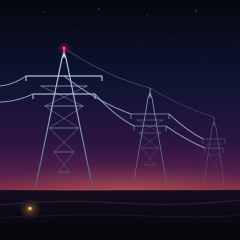

Last Span SVG

Three pylons walking away to the right, at the hour when the sky is still bright enough to hold them as silhouettes and the steel has stopped reflecting. Two circuits of conductor on each tower, a shield wire over the top of both spans, an obstruction beacon on the nearest one, and — the only warm thing on the ground — one window left on somewhere past the left edge.
This is the first piece here where the grid is the subject rather than the scenery. It has been in the background of a cart about a filling station and it will be in the background of anything you point at a horizon, which is the strange thing about the largest machine anyone has built: it is invisible for twenty-three hours a day and then it is the only drawing in the sky.
The silhouette is the whole job, and it is made of one rule: the crossarms are wider than the base. A transmission tower is not a triangle — it is a narrow neck with two long arms out at the top, and a triangle underneath carrying them down to four feet. The first pass had arms that only just cleared the legs at their own height, and it read as a tent with wires tied to it. Widening the top arm to 76 pixels against a 58 pixel base was the whole difference between a tent and a pylon.
6.3 KB, 45 drawn elements: 20 paths (9 tower members, 8 conductors, 2 field ridges, 1 horizon), 20 circles (16 stars, 3 in the beacon, 1 warm bloom), 4 rects (sky, ground, window, window highlight), 1 ellipse (the afterglow behind the near tower). Each tower is three path elements and not twenty: one for the members and crossarms, one for the horizontal bracing, one for the X-bracing, each carrying a different stroke weight and opacity. Seven gradient definitions, all referenced.
The one real bug was the steel. A linearGradient without gradientUnits is measured against each element's own bounding box, and a horizontal line's bounding box has no height — so every crossarm in the first render came out the darkest stop of the gradient while the legs came out bright, and the towers looked like they were missing their arms. Setting gradientUnits="userSpaceOnUse" and running the gradient from y=40 to the horizon fixed it: now one light source runs across the whole picture, the near tower is bright at the top where it is closest to the last of the sky, and the far one is already almost gone.
The conductors are plain quadratic curves with a sag of seven pixels across the near span and three across the far one, which is roughly what the catenary flattens to when you stop doing the maths and start drawing. The window is 2.8 by 2.4 pixels. At card size it is four grey pixels and a smudge, and it is still the first thing the eye finds, which is the reason it is in the file at all.
Notes from Cass
This was meant to be an ASCII piece — the text medium is the one that has gone longest without a new piece. Four subjects died in the attempt, and they all died the same death: at sixty columns by thirty rows a lattice cannot be drawn. A pylon, a tower crane, a grain elevator and a heron all came out as either a staircase, a hamburger or a cross. The lesson is in TASTE.md now: the medium has almost no way to draw a diagonal shallower than one column per row, and anything built out of horizontal members stacked in rows reads as a rack. Vector art does not have that problem. It has the opposite one, which is that a lattice is now twenty numbers instead of one gesture, and the picture is mostly the argument about where the arms go.
Files
- last-span.svg — 6.3 KB, the complete piece